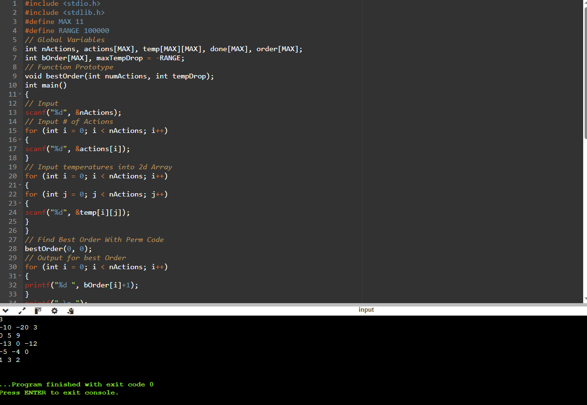
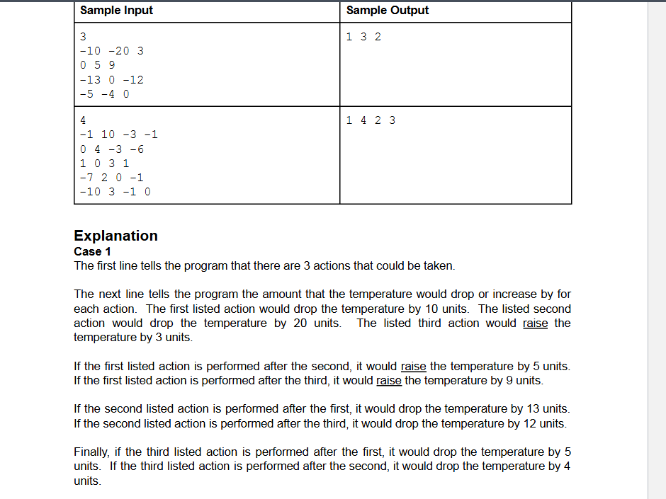

C program to determine the optimal sequence of actions to shut down a malfunctioning boat engine by maximizing the temperature reduction.

Screenshot of the Terminal

Screenshot of the the Output
Description
Each action has a base temperature drop value, but the effectiveness of an action can be influenced by the actions performed before it.
The program must evaluate all possible sequences of these actions to find the order that results in the greatest total temperature decrease.
The input consists of the number of actions, the base temperature drop for each action, and a matrix representing how the temperature drop of one action is
affected by the action performed immediately before it. The output is the sequence of actions (by their indices) that maximizes the total temperature reduction.
Skills Learned
implementing brute force algorithms by generating and evaluating all permutations of a set of actions to find the optimal solution, and using recursion to systematically explore all possible sequences.
The project also provided experience with backtracking to efficiently explore different action orders without repetition. Additionally, it improved skills in handling complex input
and output, problem decomposition, and optimization thinking by evaluating and comparing different solutions. Furthermore, the project enhanced proficiency in C programming,
particularly with arrays, recursion, and control structures, as well as debugging and testing recursive algorithms to ensure correctness.